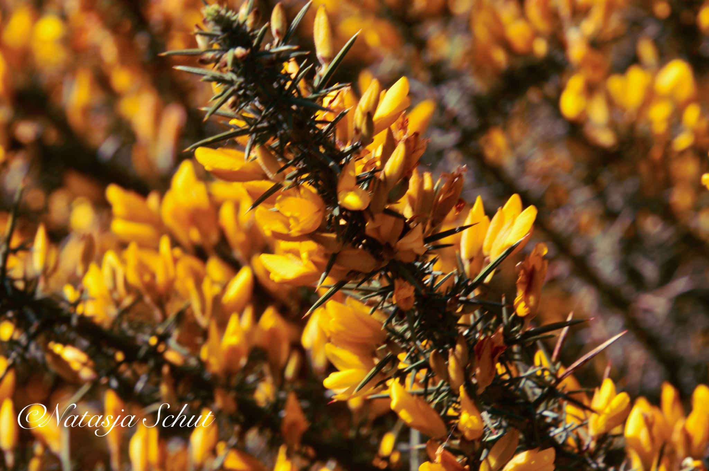
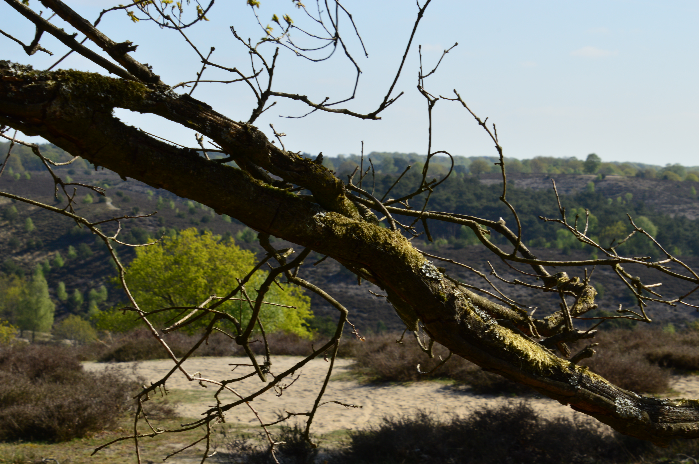
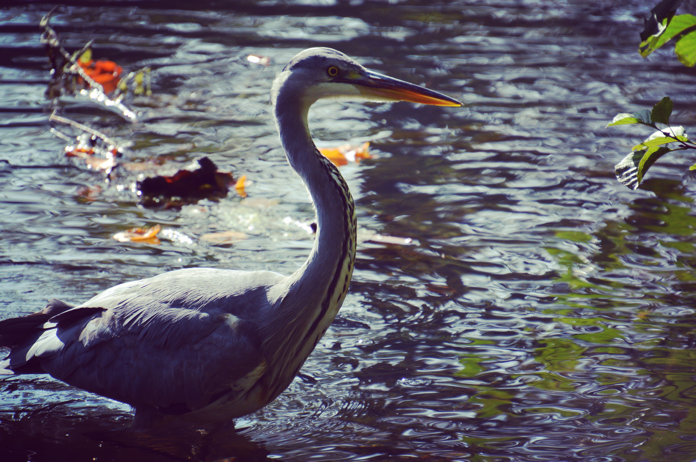
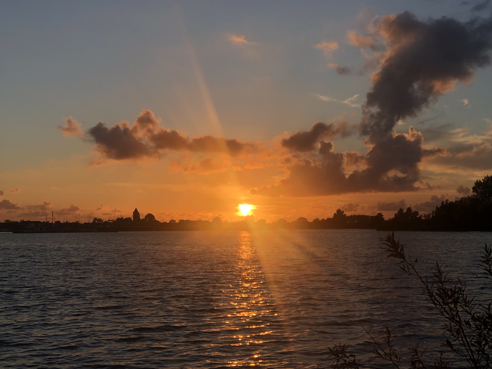

Groei · 6 min lezen
Ik mag er wezen
Over loslaten wat vertrouwd is en ruimte maken voor wat nog geen naam heeft.
NatasSpeaks / Echte verhalen
Pagina vol met waar gebeurt verhalen over pesten, ziek zijn , Dromen hebben en over leven.
Welkom in mijn wereld
Sommige verhalen wil je niet snel lezen. Je wilt erin verdwijnen. Laat de wereld even stiller worden en ontdek woorden die misschien ook iets in jou aanraken.
The story library
Bewaar je favoriete verhaal, kom later terug en neem de tijd. Elk woord heeft zijn eigen ritme.
Over loslaten wat vertrouwd is en ruimte maken voor wat nog geen naam heeft.

Het verhaal van een meisje die aan het storten is en werd gepest.

Waarom pesten zo veel mensen elkaar waarom lees het verhaal.

Hoe help je iemand die graag wil reizen rond de wereld maar asma heeft wat moet je doen.

Een zachte herinnering voor iedereen die zijn eigen weg probeert te bouwen.